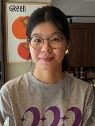

Our Team

Liang Haoyan
PhD Student
Wang Wenhui
PhD Student
Yuan Lin
Research Associate
We are always looking for motivated students and postdocs interested in
plant immunity, spatial biology, and plant–microbe interactions.
If you are interested in joining the lab, please contact:
bozeng.tang@ntu.edu.sg